Linear rollout
Imagine the next frame after each action and keep planning from it.
Agima imagines before it acts. One omni model proposes an action, generates the frame it leads to, and keeps planning from that imagined frame before touching the real environment.
A single push in Sokoban can make a puzzle unsolvable. Avoiding such errors requires anticipating consequences before acting, which is especially hard when feedback is sparse and actions cannot be undone. We introduce Agima, a training framework that teaches an agent to imagine before it acts. A single omni model both proposes actions and generates images of where they lead, then treats these imagined frames as observations. It can follow a plan forward, test an alternative move, or compare competing plans, all before touching the real environment. Supervised fine-tuning teaches these forms of imagination, and reinforcement learning then optimizes the model's textual planning decisions using only binary task-success rewards.
Across four environments spanning Maze2D, Sokoban, Pacman, and PushT, Agima plans in harder or unseen configurations excluded from training. With supervised fine-tuning alone on two-box Sokoban, it solves 40% of four-box puzzles while seeing the real board only once every five moves; an action-only planner fine-tuned from the same backbone solves 2%. After RL, Agima solves more held-out Sokoban puzzles and adapts how it uses imagination: it drafts a second plan mainly when it foresees the first one failing, and branches more often at critical decisions.
Each imagined frame becomes an observation for the next decision. Agima learns three ways to use them.
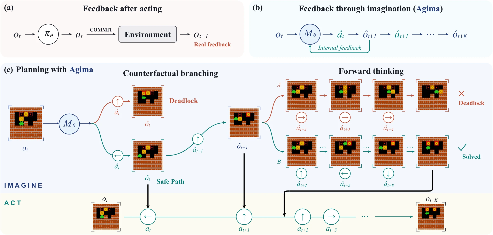
Imagine the next frame after each action and keep planning from it.
Try another action, imagine where it leads, and reject it if it fails.
Imagine complete candidate plans and execute the one that succeeds.
Four tasks with different dynamics. Agima trains on the easier setting (left) and is tested on a harder one it never saw (right). Each clip is a real environment rollout.
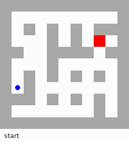
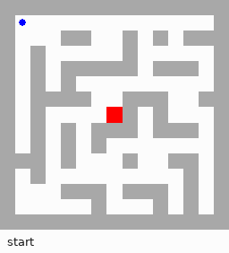
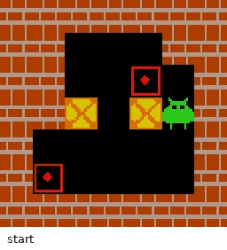
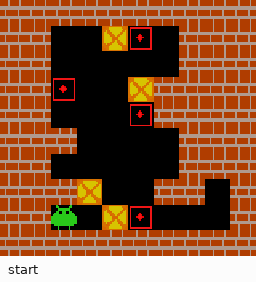
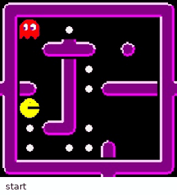
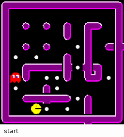
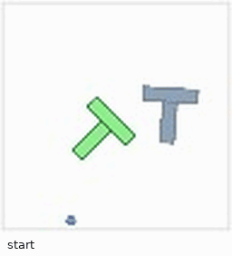
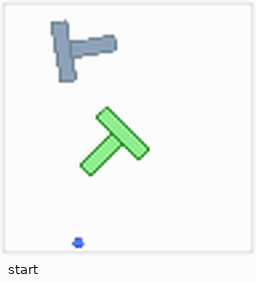
K is how many actions Agima commits before it sees the real board again. In between, it plans from its own imagined frames. K = 1 is fully reactive; K = ∞ imagines the whole episode from a single frame.
Real board every five actions (K = 5). Compared with the same backbone trained without imagined frames.
Four-box Sokoban after training on two boxes (action-only: 2%)
Pacman over the action-only model
Test sets where a locally reasonable move fails several steps later. One real frame, then pure imagination (K = ∞).
Two-box Sokoban Deadlock with forward thinking
Pacman route-order trap (G8/F4) with forward thinking
Same K = 5 model; only the imagined frames in its context are swapped. Blank or stale frames drop success to at most 1%. Ground-truth frames barely help in Sokoban (43% vs 40%) but lift Pacman to 81%.
Three test sets where a move that looks fine leads to failure several steps later. Everything runs at K = ∞.
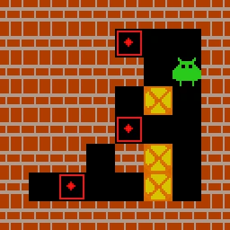
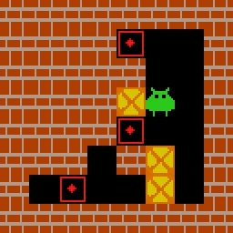
A legal push leaves a box where it can never reach a goal, so the puzzle is already lost. 2, 3 and 4 boxes, 100 puzzles each.
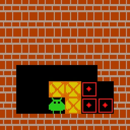
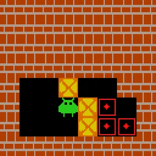
The solution passes through steps where several pushes are legal but only some keep the puzzle solvable. 2, 3 and 4 boxes, 100 puzzles each.
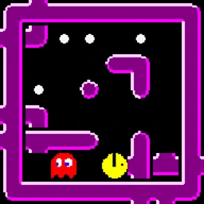
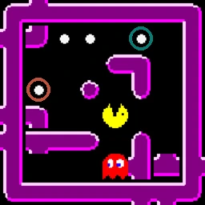
Eating the nearer food first looks safe but gets Pacman caught later; the farther food first solves the level. 8×8 grids with 2 to 8 food, plus 10×10 with 8.
A single rollout eats the nearer food and is caught later. Forward thinking imagines both routes and commits to the one that survives.
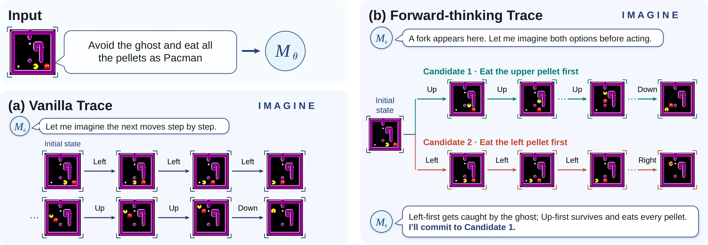
Starting from the supervised models, RL on three-box Sokoban uses only a success reward. Nothing tells the model when to compare plans or where to branch.
Every imagination-based model improves, including on four-box puzzles never seen during RL. The action-only model raises its training reward but stays near zero on the test sets.
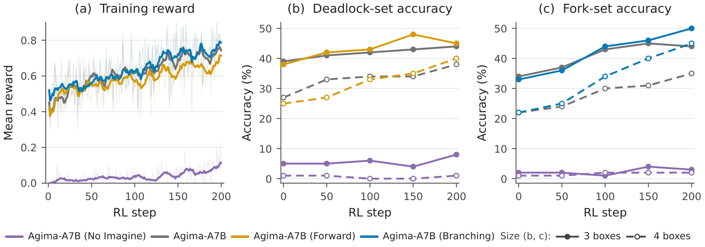
After RL, Agima drafts a second plan in 26–31% of episodes instead of 79%, and almost only when the first one really fails.
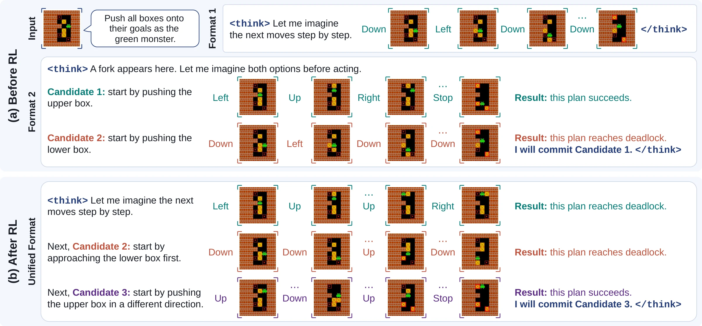
Agima opens more branches per plan and places more of them where a single push would make the puzzle unsolvable.
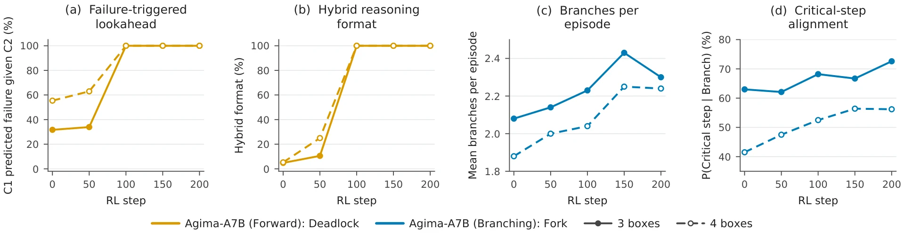
@article{agima2026,
title = {Learning to Plan with Agentic Imagination},
author = {Ge, Jiaxin and Zhang, Junyi and Chai, Tianning and Yoo, Hanjun and Wang, Chenyang and Li, Xiuyu and Shi, Weijia and Kanazawa, Angjoo and Wang, XuDong and Min, Sewon and Zettlemoyer, Luke and Darrell, Trevor and Feng, Haiwen},
journal = {arXiv preprint},
year = {2026}
}